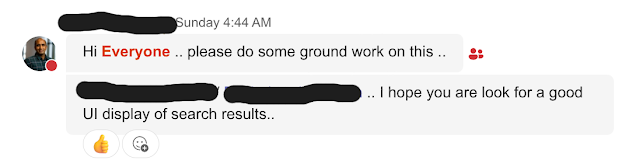
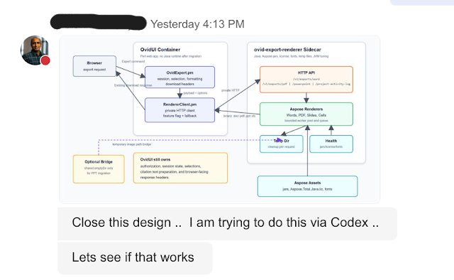

When "East Coast Time" Becomes "Anytime"
When I signed onto this contract, I agreed to align with East Coast hours. In the world of standard business, that’s a clear 9-to-5 frame—or for me on the West Coast, a manageable 6 AM to 2 PM. It’s an early start, but it’s a fair trade for synchronization.
Lately, however, those boundaries have begun to dissolve into a 24/7 "always-on" expectation that is as exhausting as it is unproductive.
It started with "Code Games" initiatives creeping into my personal life—specifically, receiving texts on a Sunday morning to spend time looking into upcoming events.

Then came the after-hours messages once my 2 PM PDT cutoff had passed.


There is a massive difference between starting early to support a team and being expected to sacrifice sleep and weekends for non-urgent tasks. When we shift the "standard" day earlier and earlier, or reach out on a Sunday morning, we aren't just "showing hustle." We are burning the very fuel required for a developer’s flow state.
In a global, distributed environment, respect for the clock is the only thing that prevents burnout. If we don't respect the "log-off" time, we aren't working as a team; we’re just working ourselves into the ground.